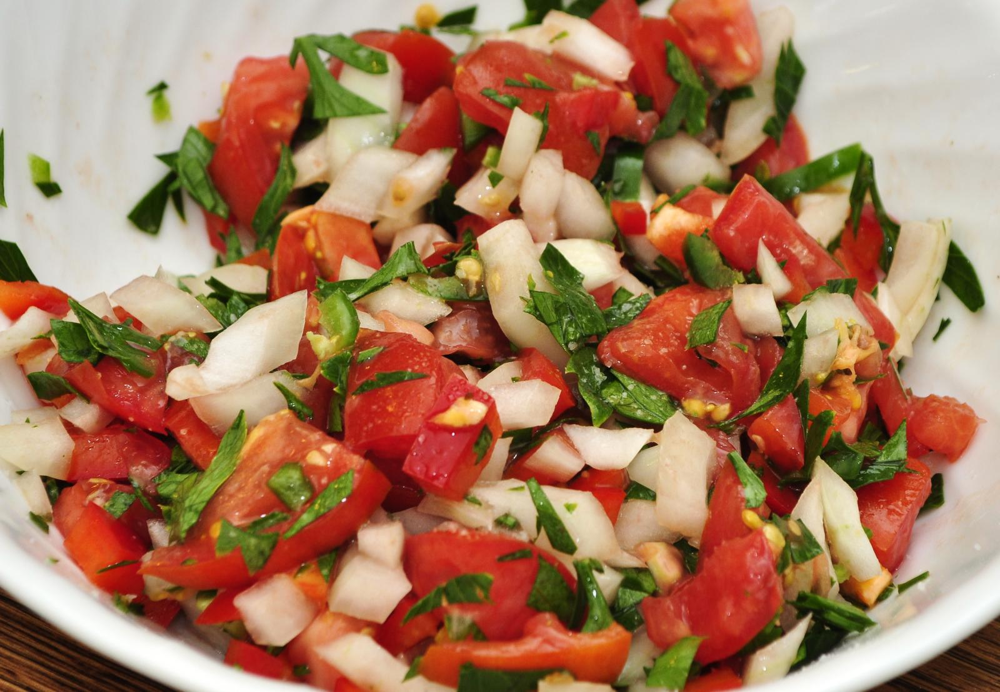

Home
Pico de Gallo

A delicious, homemade condiment perfect for tacos, fish, or just to dip tortilla chips.
This fresh, amazing treat brings together fresh tomatoes, onion, jalapeno, lime, and cilantro into a wonderful addition to any summer dish. It's sure to be a crowd pleaser.
Ingredients
- 2 tomatoes, diced
- 1/2 white onion, diced
- 1 jalapeno, diced
- 1 lime
- 1/4 cup chopped cilantro
- 1/4 tsp salt
Steps
- Finely dice the tomato and onion. Remove the stem and seeds from the jalapeño, then finely dice. Finely chop the cilantro. Add the tomato, onion, and cilantro to a bowl.
- Squeeze the juice of half the lime over the vegetables in the bowl (about 1 Tbsp). Add a pinch or two of salt, and stir everything to combine.
Taste the mixture and add more salt or lime juice to your liking. Allow the salsa to sit for five minutes before serving. Serve immediately, or refrigerate for up to three days.